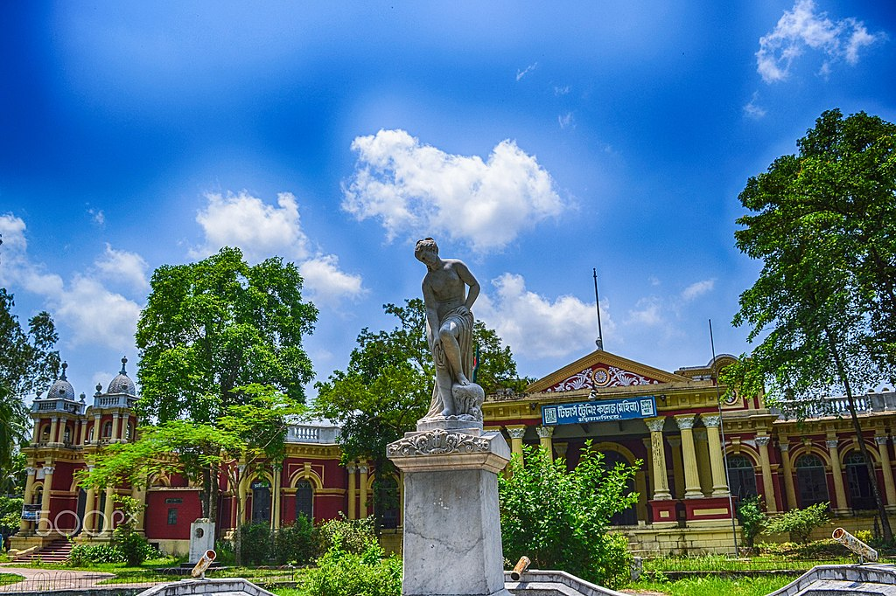
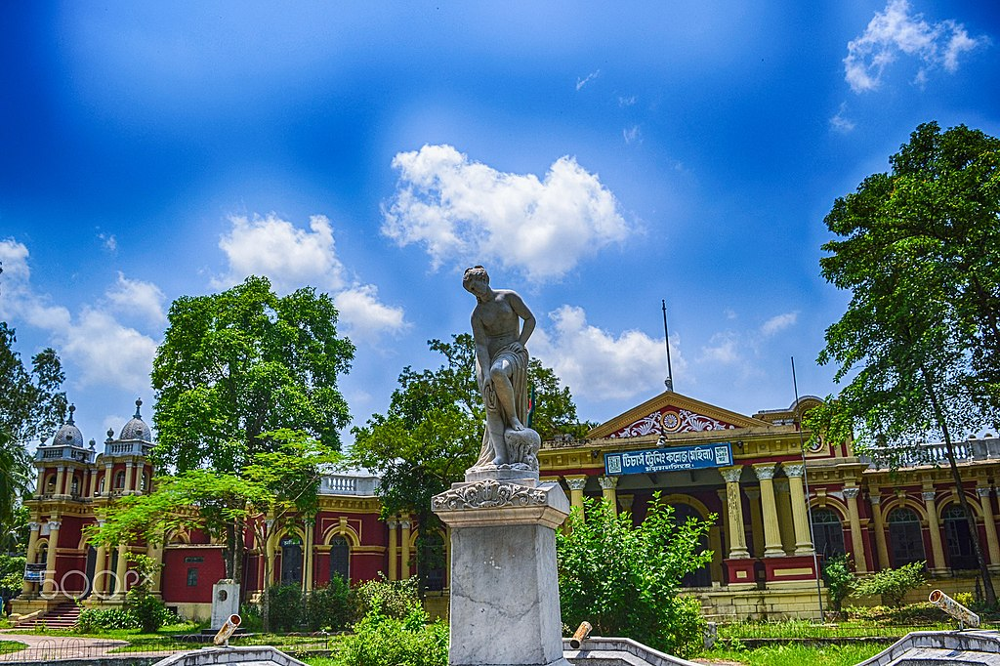

Mymensingh Division
is one of the eight administrative divisions of Bangladesh. It has an area of 10,485 square kilometres (4,048 sq mi) and a population of 11,370,000 as of the 2011 census. It was created in 2015 from districts previously composing the northern part of Dhaka Division. Its headquarters are in Mymensingh city in Mymensingh District
History
The Greater Mymensingh region (Mymensingh District along with five other neighbouring districts) was created as a Mymensingh district by the British Indian government in 1787. Later it was reorganized in two phases into six districts: Mymensingh, Kishoreganj, Netrakona, Jamalpur, Tangail, and Sherpur. But Kishoreganj and Tangail are no longer part of Mymensingh, so Mymensingh comprises four districts. On 12 January 2015 prime minister Sheikh Hasina declared the establishment of a new Mymensingh Division. The initial intention was to carve six districts (those comprising the original Mymensingh district of 1787) out of the Dhaka Division. However, while four of the districts were eager for the establishment of a new division, people in the Tangail and Kishoreganj Districts wished to remain part of Dhaka Division. On 14 September 2015 Mymensingh was officially announced as a division consisting of four districts
Mughal period
inhibited any sustained attempts by Mughal governors to push into the Barisal forests. After 1666, when Mughal naval forces cleared the Meghna estuary of such external threats, the Barisal interior lay ripe for colonization. Land developers acquired grants of plots of land, taluq , from provincial authorities. Abundant and easily obtainable by purchase from the late 17th century these grants tended to be regarded by their possessors taluqdar . As taluqdars brought their taluqs into agricultural production, these men passed up the land revenue through a class of non-cultivating intermediaries, or zamindar . Zamindars typically resided in the provincial capital, where they had ready access to the chief provincial revenue officer, or dewan .
 
